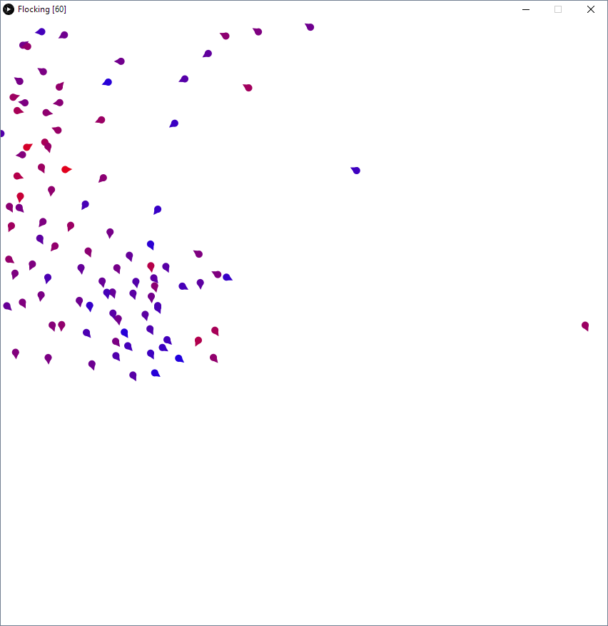
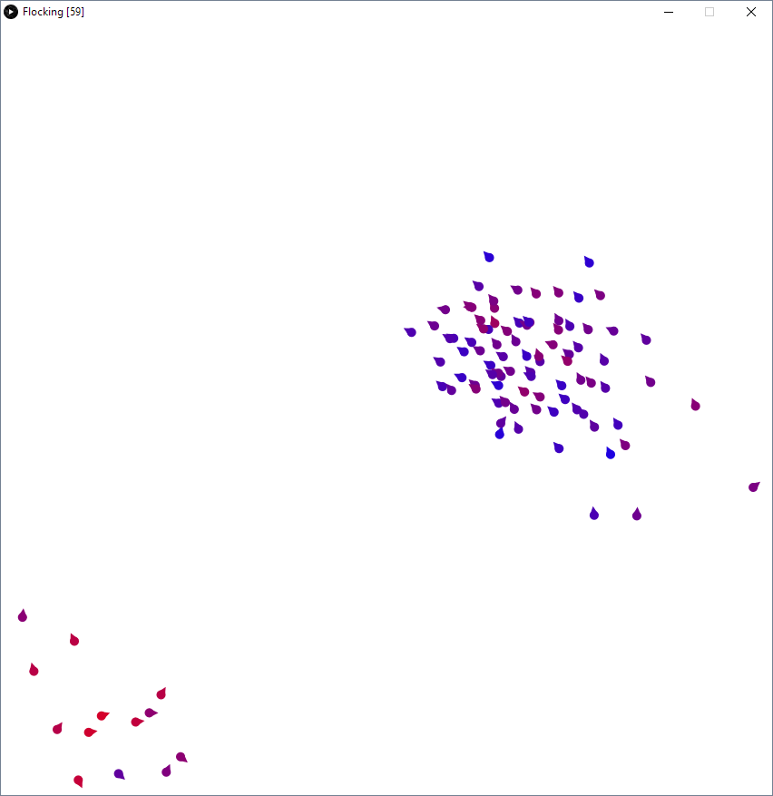
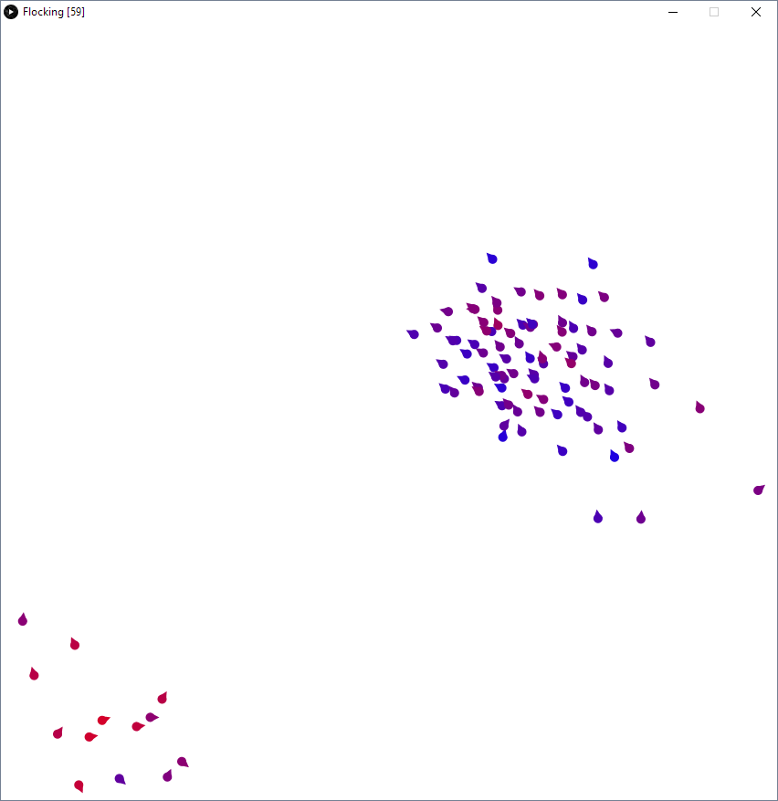

Flocking
Controls:
=: Add boid
-: Remove boid
S: Scatter boids
P: Toggle drawing boid paths
C: Clear screen (used to clear boid paths)
A: Mouse attract mode
R: Mouse repel mode
1: Toggle flock centering force
2: Toggle flock matching force
3: Toggle flock avoidance force
4: Toggle flock wandering force
Space: Toggle simulating
Concept:
A 2D boid flocking simulation written in Processing. The system, described by Craig Reynolds, is simply an interaction between four "forces" or tendencies applied to each boid. The colors of my boids indicate their nearness to their max/min speeds (blue is fast, red is slow).
Credits:
Paper Reference: Boids
Processing.org


